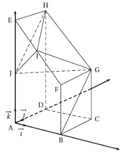
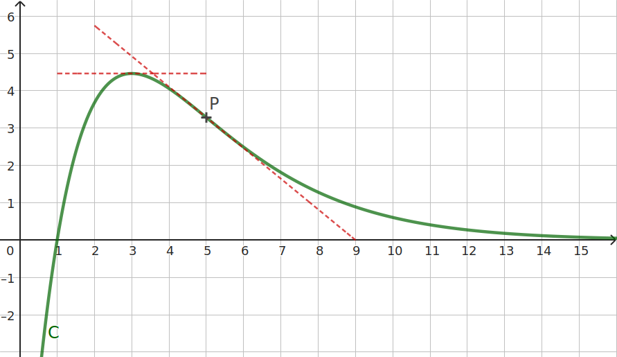

L’usage de la calculatrice, en mode examen, est autorisé.
Le sujet comporte 4 pages. II est composé de quatre exercices indépendants. Le candidat doit traiter
tous les exercices.
La clarté des raisonnements et la qualité de la rédaction interviendront pour une part importante
dans l’appréciation des copies.
Exercice 1 (5 points)
On considère le prisme droit \(ABFEDCGH\), de base \(ABFE\),
trapèze rectangle en A.
On associe à ce prisme le repère orthonormé \(\left(A ; {\overrightarrow{i}}, {\overrightarrow{j}},
{\overrightarrow{k}}\right)\)
tel que
\( \overrightarrow{i} = \dfrac{1}{4} \overrightarrow{AB} \),
\( \overrightarrow{j} = \dfrac{1}{4} \overrightarrow{AD} \),
\( \overrightarrow{k} = \dfrac{1}{8} \overrightarrow{AE} \),
De plus , on a
\( \overrightarrow{BF} = \dfrac{1}{2} \overrightarrow{AE} \),
On note \(I\) le milieu du segment \([EF]\).
On note \(J\) le milieu du segment \([AE]\).

( pt)
Donner les coordonnées des points \(I\) et \(J\).
\(\overrightarrow{AE} = 8\overrightarrow{k} \) donc \(E(0;0;8)\). \(A\) étant l'origine du repère,
\(A(0;0;0)\).
\(J\) étant le milieu de \([AE]\), on a
\(J\left(\frac{0+0}{2};\frac{0+0}{2};\frac{8+0}{2};\right)=(0;0;4)\).
\(\overrightarrow{AF} = \overrightarrow{AB} + \overrightarrow{BF} = 4\overrightarrow{i} +
\frac{1}{2}\overrightarrow{AE} \) donc \(F\left(4;0;\frac{1}{2}8\right)=(4;0;4)\).
\(I\) étant le milieu de \([EF]\),
\(I\left(\frac{0+4}{2};\frac{0+0}{2};\frac{4+8}{2}\right)=(2;0;6)\).
Soit \(\overrightarrow{n}\) le vecteur de coordonnées
\(\left(
\begin{array}{c}
-1 \\ 1 \\ 1 \\
\end{array}
\right)\)
( pt)
Montrer que le vecteur \(\overrightarrow{n}\) est normal au plan \((IGJ)\).
Calculons les coordonnées de \(G\) :
\(\overrightarrow{AG} = \overrightarrow{AB} + \overrightarrow{BC} + \overrightarrow{CG} =
4\overrightarrow{i} + 4\overrightarrow{j} + 4\overrightarrow{k}\) donc \(G =
(4;4;4)\).
Ainsi, \(\overrightarrow{IG} =
\left(\begin{array}{c}
x_G-x_I \\
y_G-y_I \\
z_G-z_I \\
\end{array}\right)
=
\left(\begin{array}{c}
4-2 \\
4-0 \\
4-6 \\
\end{array}\right)
=
\left(\begin{array}{c}
2 \\
4 \\
-2 \\
\end{array}\right)
\)
et \(\overrightarrow{IJ} =
\left(\begin{array}{c}
x_J-x_I \\
y_J-y_I \\
z_J-z_I \\
\end{array}\right)
=
\left(\begin{array}{c}
0-2 \\
0-0 \\
4-6 \\
\end{array}\right)
=
\left(\begin{array}{c}
-2 \\
0 \\
-2 \\
\end{array}\right)
\)
(ces deux vecteurs étant non colinéaires, les points \(I\), \(J\) et \(G\) définissent bien
un plan.)
De plus :
\(\overrightarrow{n}\cdot\overrightarrow{IG}
=
\left(\begin{array}{c}
-1 \\
1 \\
1 \\
\end{array}\right)
\cdot
\left(\begin{array}{c}
2 \\
4 \\
-2 \\
\end{array}\right)
= -1 \times 2 + 1 \times 4 + 1 \times (-2)
= -2 + 4 -2
= 0
\) donc \(\overrightarrow{n}\perp\overrightarrow{IG}\)
et :
\(\overrightarrow{n}\cdot\overrightarrow{IJ}
=
\left(\begin{array}{c}
-1 \\
1 \\
1 \\
\end{array}\right)
\cdot
\left(\begin{array}{c}
-2 \\
0 \\
-2 \\
\end{array}\right)
= -1 \times (-2) + 1 \times 0 + 1 \times (-2)
= 2 + 0 -2
= 0
\) donc \(\overrightarrow{n}\perp\overrightarrow{IJ}\)
et on a bien \(\overrightarrow{n}\perp (IGJ)\).
( pt)
Déterminer une équation cartésienne du plan \((IGJ)\).
Le vecteur normal \(\overrightarrow{n}\) conduit à une équation du plan \((IGJ) : -x + y + z
+ d = 0\). Comme \(J\in (IGJ)\), on a \(-0+0+4+d=0\), soit \(d=-4\).
Ainsi, \((IGJ) : -x + y + z -4 = 0\).
( pt)
Déterminer une représentation paramétrique de la droite \(d\), perpendiculaire au plan
\((IGJ)\) et passant par \(H\).
\((d) :
\left\{\begin{array}{l}
x = x_H + x_{\overrightarrow{n}} k \\
y = y_H + y_{\overrightarrow{n}} k \\
z = z_H + z_{\overrightarrow{n}} k \\
\end{array}\right.
=
\left\{\begin{array}{l}
x = - k \\
y = 4 +k \\
z = 8 +k \\
\end{array}\right.
\)
pour \(k\in\mathbb{R}\).
( pt)
On note \(L\) le projeté orthogonal du point \(H\) sur le plan \((IGJ)\).
Montrer que les coordonnées de \(L\) sont \(\left(\dfrac{8}{3};\dfrac{4}{3};\dfrac{16}{3}\right)\).
On vérifie que \(L\in (IGJ)\) :
\(-x_L+y_L+z_L-4=\dfrac{-8}{3}+\dfrac{4}{3}+\dfrac{16}{3}-\dfrac{12}{3}=\dfrac{-8+4+16-12}{3}=0\).
\(L\) vérifie l'équation du plan \((IGJ)\), donc en est bien un point.
On doit aussi vérifier que \((HL)\perp (IGJ)\) :
On a \(H(0;4;8)\) donc \(\overrightarrow{HL}=
\left(
\begin{array}{l}
\dfrac{8}{3}-0 \\
\dfrac{4}{3}-4 \\
\dfrac{16}{3}-8 \\
\end{array}
\right)
=
\left(
\begin{array}{l}
\dfrac{8}{3} \\
\dfrac{-8}{3} \\
\dfrac{-8}{3} \\
\end{array}
\right)
=\dfrac{-8}{3}\overrightarrow{n}
\)
De fait \(\overrightarrow{HL}\) et \(\overrightarrow{n}\) sont colinéaires donc \((HL)\) et
\((IGJ)\) sont bien perpendiculaires.
( pt)
Calculer la distance du point \(H\) au plan \((IGJ)\)
Cette distance est \(HL =
\left\|\overrightarrow{HL}\right\|=\left\|\dfrac{-8}{3}\overrightarrow{n}\right\| =
\left|\dfrac{-8}{3}\right|\left\|\overrightarrow{n}\right\| =
\dfrac{8}{3}\sqrt{(-1)^2+1^2+1^2}=\dfrac{8\sqrt{3}}{3}\)
( pt)
Montrer que le triangle \(IGJ\) est rectangle en \(I\).
On vérifie que le produit scalaire \(\overrightarrow{IG}\cdot\overrightarrow{IJ}\) est nul :
\(\overrightarrow{IG}\cdot\overrightarrow{IJ}
=
\left(\begin{array}{c}
2 \\
4 \\
-2 \\
\end{array}\right)
\cdot
\left(\begin{array}{c}
-2 \\
0 \\
-2 \\
\end{array}\right)
= 2 \times (-2) + 4\times 0 + -2\times (-2)
= -4 + 0 +4
= 0
\)
( pt)
En déduire le volume du tétraèdre \(IGJH\).
On rappelle que le volume \(V\) d’un tétraédre est donné par la formule :
\(V = \dfrac{1}{3} \textrm{aire de la base} \times \textrm{hauteur} \)
Le tétraèdre \(IGJH\) ayant pour hauteur \([LH]\) et pour base le triangle \(IGJ\) rectangle en
\(I\) :
\( V = \dfrac{1}{3}\dfrac{IG\times IJ}{2}\times LH\) ; calcul effectif :
\( \dfrac{1}{3}\dfrac{\sqrt{2^2+4^2+(-2)^2}\sqrt{(-2)^2+0^2+(-2)^2}}{2} \times \dfrac{8\sqrt{3}}{3}\)
\(= \dfrac{1}{3}\dfrac{\sqrt{3\times 8}\times\sqrt{8}}{2}\times\dfrac{8\sqrt{3}}{3}
= \dfrac{\cancel{3}\times 8\times 8}{3\times 2\times \cancel{3}}
= \dfrac{32}{3}
\)
Exercice 2 (5 points)
Cet exercice est un questionnaire 4 choix multiples. Pour chaque question, une seule des quatre propositions
est exacte. Indiquer sur la copie le numéro de la question et la lettre de la proposition choisie. Aucune
justification n’est demandée.
Pour chaque question, une réponse exacte rapporte un point. Une réponse fausse, une réponse multiple ou
I’absence de réponse ne rapporte ni n’enlève de point.
( pt)
Question 1 :
Soit \(f\) la fonction définie sur \(\left]0;+\infty\right[\) par \(f(x) = x^2\ln x\).
L'expression de la fonction dérivée de \(f\) est :
\(f'(x)= 2x\ln x\)
\(f'(x)= x\left(2\ln x+1\right)\)
\(f'(x)= 2\)
\(f'(x)= x\)
Réponse b (utiliser la dérivée d'un produit) :
\(f'(x)=2x\ln x + x^{\cancel{2}}\frac{1}{\cancel{x}}\)
( pt)
Question 2 :
La courbe ci-contre représente une fonction \(f\) définie et deux fois dérivable sur
\(\left]0;+\infty\right[\).
On sait que :
le maximum de la fonction \(f\) est atteint au point d’abscisse 3;
le point \(P\) d’abscisse 5 est l’unique point
d'inflexion de la courbe \(\mathcal{C}\).
On a :
pour tout \(x\in\left]0;5\right[\), \(f(x)\) et \(f'(x)\) sont de même signe ;
pour tout \(x\in\left]5;+\infty\right[\), \(f(x)\) et \(f'(x)\) sont de même signe ;
pour tout \(x\in\left]0;5\right[\), \(f'(x)\) et \(f''(x)\) sont de même signe ;
pour tout \(x\in\left]5;+\infty\right[\), \(f(x)\) et \(f''(x)\) sont de même signe ;

Réponse d : \(P\) étant le seul point d'inflexion, \(f\) est convexe sur
\(\left]5;+\infty\right[\), car au dessus de sa tangente en \(x=5\), d'où \(f''>0\) sur cet
intervalle. Elle est aussi positive sur ce même intervalle.
( pt)
Une urne contient 10 boules indiscernables au toucher dont 7 sont bleues et les autres vertes.
On
effectue trois tirages successifs avec remise.
Question 3 :
La probabilité d’obtenir exactement deux boules vertes est :
Réponse d : le nombre de boules vertes tirées suit une loi binomiale de paramètres
\(p=\dfrac{3}{10}\) et \(n=3\).
( pt)
Une urne contient 10 boules indiscernables au toucher dont 7 sont bleues et les autres vertes.
On
effectue trois tirages successifs avec remise.
Question 4 :
La probabilité d’obtenir au moins une boule verte est :
\(\left(\dfrac{3}{10}\right)^3 \)
\(1-\left(\dfrac{3}{10}\right)^3 \)
\(\left(\dfrac{7}{10}\right)^3 \)
\(1-\left(\dfrac{7}{10}\right)^3 \)
Réponse d : L'événement complémentaire est de tirer trois boules bleues, sa probabilité
étant \(\left(\dfrac{7}{10}\right)^3 \).
Exercice 3 (6 points)
Des biologistes étudient l’évolution d’une population d’insectes dans un jardin botanique.
Au début de l’étude la population est de 100 000 insectes. Pour préserver |’équilibre du milieu
naturel, le nombre d‘insectes ne doit pas dépasser 400 000.
Partie A : Étude d’un premier modèle en laboratoire
L'observation de l’évolution de ces populations d’insectes en laboratoire, en l’absence de tout
prédateur, montre que le nombre d‘insectes augmente de 60% chaque mois.
En tenant compte de cette observation, les biologistes modélisent l’évolution de la population
d‘insectes a l'aide d’une suite \((u_n)\) où, pour tout entier naturel \(n\), \(u_n\) modélise
le nombre d’insectes, exprimé en millions, au bout de \(n\) mois.
On a donc \(u_0 = 0{,}1\).
( pt)
Justifier que pour tout entier naturel \(n\) : \(u_n = 0{,}1\times 1{,}6^n\).
En augmentant de 60%, la population est multipliée par 1,6 chaque année, donc \(u_n\) est
une suite géométrique de raison 1,6.
( pt)
Déterminer la limite de la suite \((u_n)\).
\(u_0>0\) et la raison 1,6>1, donc la suite \(u_n\) tend vers \(+\infty\).
( pt)
En justifiant votre réponse, déterminer le plus petit entier naturel n a partir duquel
\(u_n>0{,}4\).
Dans ce contexte, 0,4 étant assez faible, on peut calculerles premiers termes de la suite :
\(u_1=0{,}16\) ;
\(u_2=0{,}256\) ;
\(u_3=0{,}4096\). La suite étant sctrictement croissante, \(n=3\) répond à la
question.
Méthode «générale» :
En appliquant le logarithme décimal (strictement croissant) à l'inégalité (qui ne contient
que des termes positifs), on obtient : \(\log u_0 + n\log 1{,}6 > \log 0{,}4 \). En
isolant \(n\) :
\(n > \dfrac{\cancel{\log 0{,}1} + \log 4 - \cancel{\log 0{,}1}}{\log 1{,}6}=\dfrac{2\log
2}{4\log 2 -1}\approx 2{,}94\), que l'on arrondit à \(n=3\).
( pt)
Selon ce modéle, l’équilibre du milieu naturel serait-il préservé ? Justifier la réponse.
L'énoncé précise clairement que la population d'insectes ne doit pas dépasser 400 000 pour
que l'équilibre naturel soit prśervé, soit \(u_n \leqslant 0{,}4\) ; ce n'est donc pas le
cas.
Partie B : Étude d’un second modèle
En tenant compte des contraintes du milieu naturel dans lequel évoluent les insectes, les biologistes
choisissent une nouvelle modélisation.
Ils modélisent le nombre d’insectes à l’aide de la suite \((v_n)\), définie par :
\(v_0 = 0{,}1\) et, pour tout entier naturel \(n\), \(v_{n+1} = 1{,}6v_n - 1{,}6v_n^2\)
où, pour tout entier naturel \(n\), \(v_n\) est le nombre d’insectes, exprimé en millions, au bout de \(n\)
mois.
( pt)
Déterminer le nombre d’insectes au bout d’un mois.
On calcule \(v_1 = 1{,}6v_0 - 1{,}6v_0^2 = 1{,}6\times0{,}1 - 1{,}6\times 0{,}1^2=0{,}144 \)
On a donc 144 000 insectes au bout d'un mois.
On considere la fonction \(f\) définie sur l’intervalle \(\left[0;\dfrac{1}{2}\right]\) par
\(f(x)=1{,}6x-1{,}6x^2\)
( pt)
Résoudre l’équation \(f(x)=x\).
On met \(x\) en facteur et on utilise une équation produit nul :
\(0=f(x)-x=1{,}6x-1{,}6x^2-x=0{,}6x-1{,}6x^2=x\left(0{,}6-1{,}6x\right)\)
ce qui équivaut à \(x=0\) ou bien \(0{,}6-1{,}6x=0\), soit
\(x=\dfrac{0{,}6}{1{,}6}=0{,}375\).
( pt)
Montrer que la fonction \(f\) est croissante sur l’intervalle
\(\left[0;\dfrac{1}{2}\right]\)
l'expression \(f(x)\) est une fonction polynôme du second degré dont les coefficients de
\(x^2\) et \(x\) sont respectivement \(a=-1{,}6<0\) et \(b=1{,6}\). Comme
\(x_M=\dfrac{-b}{2a}=-\dfrac{\cancel{1{,}6}}{2\times(-\cancel{1{,}6})}=\dfrac{1}{2}\), \(f\)
est croissante jusqu'à son maximum \(x_M=\dfrac{1}{2}\).
( pt)
Montrer par récurrence que, pour tout entier naturel \(n\), on a \(0 \leqslant v_n \leqslant
v_{n+1} \leqslant \dfrac{1}{2}\)
Par récurrence sur \(n\).
On note \(H\) la partie de \(\mathbb{N}\) pour laquelle l'inégalité \(0 \leqslant v_n
\leqslant
v_{n+1} \leqslant \dfrac{1}{2}\) est vraie.
Initialisation : \(0\in H\) car \(0 \leqslant v_0=0{,}1 \leqslant
v_1=0{,}144 \leqslant \dfrac{1}{2}=0{,}5\) est vraie.
Hérédité : soit \(n\in H\).
Alors on a \(0 \leqslant v_n \leqslant
v_{n+1} \leqslant \dfrac{1}{2}\) ; en appliquant la fonction \(f\) croissante sur
\(\left[0;\dfrac{1}{2}\right]\), on a :
\(f(0) \leqslant f(v_n) \leqslant
f(v_{n+1}) \leqslant f\left(\dfrac{1}{2}\right)\)
soit, en utilisant la définition de \((v_n)\), et avec \(f(0)=0\) et
\(f\left(\dfrac{1}{2}=0{,}4\right)\), on a \(0 \leqslant v_{n+1} \leqslant
v_{n+2} \leqslant 0{,}4 \leqslant \dfrac{1}{2}\), donc \(n+1\in H\).
Conclusion : \(0\in H\) et \(n\in H \Rightarrow {n+1}\in H\), donc \(H=\mathbb{N}\).
L'inégalité est donc vraie pour chaque rang \(n\).
( pt)
Montrer que la suite \((v_n\) est convergente.
On note \(\mathcal{l}\) la valeur de sa limite. On admet que \(\mathcal{l}\) est solution de
l’équation
\(f(x)=x\).
D'après l'inégalité précédente, \(v_n\) est croissante et majorée par 0,5 donc elle converge
(vers \(\mathcal{l}\)).
D'après les solutions de \(f(x)=x\), \(\mathcal{l}=0\) (impossible car \(u_0>0\)) ou
\(\mathcal{l}=0{,}375\) qui est donc la valeur de la limite de \((v_n)\).
Comme \(\mathcal{l}=0{,}375<0{,}4\), le milieu naturel est préservé.
On donne ci-contre la fonction seuil, écrite en langage Python.
( pt)
Qu’observe-t-on si on saisit seuil(0.4) ?
Le programme va boucler à l'infini, car la suite converge en croissant vers
0,375<0,4.
( pt)
Déterminer la valeur renvoyée par la saisie de
seuil(0.35).
Interpréter cette valeur dans le contexte de l'exercice.
On obtient \(n=\), qui indique au bout de combien de mois la populations d'insectes
dépasse 350 000 individus.
def seuil(a) :
v = 0.1
n = 0
while v<a :
v = 1.6*v - 1.6*v*v
n = n+1
return n
Exercice 4 (5 points)
On considère la fonction \(f\) définie sur \(\mathbb{R}\) par :
\(f(x) = \textrm{e}^{3x} -(2x+1)\textrm{e}^x \)
Le but de cet exercice est d’étudier la fonction sur \(\mathbb{R}\).
Partie A - Étude d’une fonction auxiliaire
On définit la fonction \(g\) sur \(\mathbb{R}\) par:
\(g(x) = 3\textrm{e}^{2x} -2x-3 \)
( pt)
Déterminer la limite de la fonction \(g\) en \(-\infty\).
\(\displaystyle\lim_{x\to -\infty}\textrm{e}^{2x}=0^+\)
et
\(\displaystyle\lim_{x\to -\infty} -2x-3=+\infty\)
donc par somme :
\(\displaystyle\lim_{-\infty} f= +\infty\)
(Asymptote oblique \(y=-2x-3\))
( pt)
Déterminer la limite de la fonction \(g\) en \(+\infty\).
\(\displaystyle\lim_{x\to +\infty}\textrm{e}^{2x}=+\infty\)
et
\(\displaystyle\lim_{x\to +\infty} -2x-3=-\infty\)
La somme présente donc une forme indéterminée, mais les théorèmes de croissance comparée
affirment que l'exponentielle domine les polynômes lorsqu'elle tend vers l'infini. Donc :
\(\displaystyle\lim_{+\infty} f= +\infty\)
(Pas d'asymptote oblique)
( pt)
On admet que la fonction \(g\) est dérivable sur \(\mathbb{R}\), et on note \(g'\) sa
fonction dérivée. Démontrer que pour tout nombre réel \(x\), on a \(g'(x)
=6\textrm{e}^{2x}-2\).
En déduire le tableau de variations de la fonction \(g\) sur \(\mathbb{R}\). Vérifier que la
fonction \(g\) admet un minimum égal a \(\ln(3)-2\).
cf le tableau de variation précédent.
( pt)
Montrer que \(x = 0\) est solution de l’équation \(g(x) = 0\)
\(g(0)= 3\times 1 - 2\times 0 -1 = 0\)
( pt)
Montrer que |’équation \(g(x) = 0\) admet une deuxième solution, non nulle,
notée \(\alpha\), dont on donnera un encadrement d’amplitude 10-1.
La fonction \(g\) est continue et strictement décroissante de \(+\infty>0\) à \(\ln 3
-3<0\) sur \(\left]-\infty;\frac{-\ln 3}{2}\right]\) donc elle admet un zéro \(\alpha\)
sur cet intervalle.
\(x\)
-∞
α
\(\frac{-\ln 3}{2}\)
0
+∞
\(g'(x)\)
-
-
0
+
+
+∞
+∞
↘
↗
\(g\)
0
0
↘
↗
\(\ln(3)-2\)
On a \(\alpha\approx -1{,}4\).
Partie B - Etude de la fonction \(f\)
( pt)
La fonction \(f\) est dérivable sur \(\mathbb{R}\), et on note \(f'\) sa fonction dérivée.
Démontrer que pour tout nombre réel \(x\), on a \(f'(x) = \textrm{e}^x g(x)\), où \(g\) est la
fonction
définie dans la partie A.
Attention à utiliser la dérivée du produit. On factorise ensuite par
\(\textrm{e}^x\)
\(
f'(x)
= 3\textrm{e}^{3x} -\left(2\textrm{e}^x+(2x+1)\textrm{e}^x \right)
= 3\textrm{e}^{3x} -3\textrm{e}^x -2x\textrm{e}^x
= \textrm{e}^{x}\left(3\textrm{e}^{2x} -3 -2x\right)
= \textrm{e}^{x}g(x)
\)
( pt)
En déduire alors le signe de la fonction dérivée \(f'\) puis les variations de la fonction \(f\) sur
\(\mathbb{R}\).
Comme l'exponentielle est positive, \(f'\) et \(g\) ont même signe.
x
-∞
α
0
+∞
\(f'(x)\)
+
0
-
0
+
\(\frac{-8}{3}α\textrm{e}^{α}\)
+∞
\(f\)
↗
↘
↗
0
0
( pt)
Pourquoi la fonction \(f\) n’est-elle pas convexe sur \(\mathbb{R}\) ? Expliquer.
Sa dérivée s'annule deux fois, donc sa dérivée n'est pas croissante sur \(\mathbb{R}\).